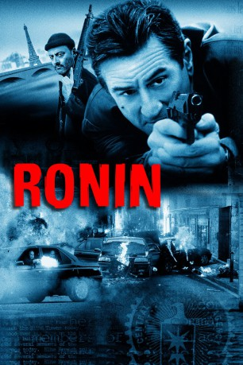
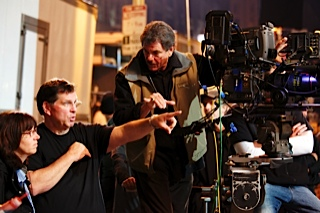
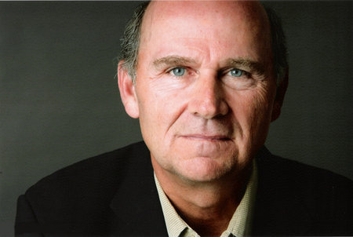
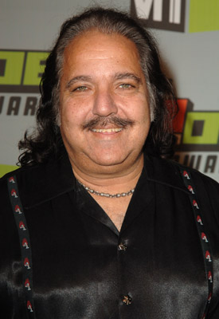
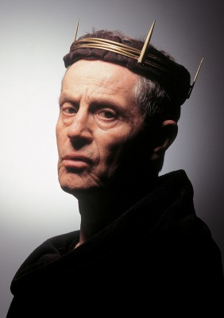
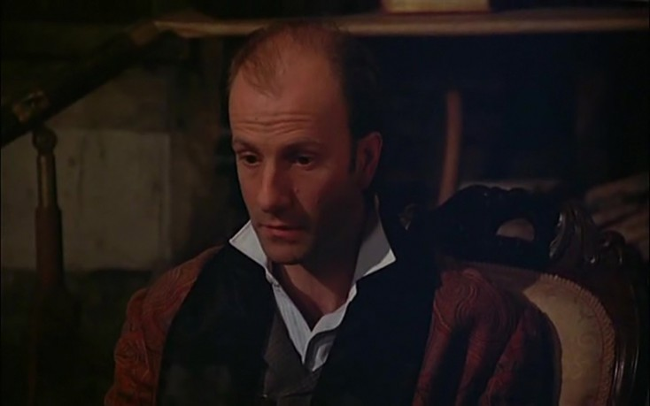

#893 Ronin
 
 IMDB-Wertung: 7.3 / 10
IMDB-Wertung: 7.3 / 10  Metascore: 67
Metascore: 67 
Die geheimnisvolle Dierdre heuert mehrere Ronins (Samurais ohne Meister), käufliche Spezialisten für alle Fälle an, um eine Tasche zu stehlen, ehe der momentane Besitzer sie an den KGB verkaufen kann. Die Männer kennen sich nicht, und obwohl sie unterschiedliche Berufs- und Lebensauffassungen haben, führen sie den Job aus. Doch die Tasche verschwindet kurz nach dem Coup und bald stecken alle Beteiligten in einem tödlichen Spiel, bei dem niemand sicher ist und jeder ein Verräter sein kann.
Jahr: 1998
Dauer: 122 Minuten
FSK: 16
Land: England Studio: UIPTonspuren: DTS - ,
Untertitel:
Auflösung: 1080p (1920x816) Größe: 10444 MB
Genre: Action, Abenteuer, Krimi, Thriller
Regisseur:  John Frankenheimer
John Frankenheimer
Drehbuch: J.D. Zeik, J.D. Zeik, David Mamet
Soundtrack: Elia Cmiral
Darsteller:
 Robert De Niro als Sam
Robert De Niro als Sam Jean Reno als Vincent
Jean Reno als Vincent- Natascha McElhone als Deirdre
 Stellan Skarsgård als Gregor
Stellan Skarsgård als Gregor Sean Bean als Spence
Sean Bean als Spence-  Skipp Sudduth als Larry
 Michael Lonsdale als Jean-Pierre
Michael Lonsdale als Jean-Pierre Jonathan Pryce als Seamus O'Rourke
Jonathan Pryce als Seamus O'Rourke-  Ron Perkins als Man with the Newspaper
 Féodor Atkine als Mikhi
Féodor Atkine als Mikhi- Katarina Witt als Natacha Kirilova
 Amidou als Man at Exchange
Amidou als Man at Exchange-  Ron Jeremy als Fishmonger , scenes deleted
- Katia Tchenko als Woman Hostage
- Lee Delong als (uncredited
- Christine Musset als Natacha Kirilova's Assistant , uncredited
-  Jan Tríska als Dapper Gent
- Bernard Bloch als Sergi
- Dominic Gugliametti als Clown Ice Skater
- Alan Beckworth als Clown Ice Skater
- Daniel Breton als Sergi's Accomplice
- Tolsty als The 'Boss'
- Gérard Moulévrier als Tour Guide
- Lionel Vitrant als The 'Target'
- Vincent Schmitt als Arles Messenger
- Léopoldine Serre als Arles Little Girl
- Lou Maraval als Arles Little Girl
- Frédéric Schmalzbauer als German Tour Guide
- Julia Maraval als Girl Hostage
-  Laurent Spielvogel als Tourist in Nice
- Steve Suissa als Waiter in Nice
- Dyna Gauzy als Little Screaming Girl
- Lilly-Fleur Pointeaux als Little Girl
- Amanda Spencer als Little Girl
- Dimitri Rafalsky als Russian Interpreter
- Vladimir Tchernine als Russian Mechanic
- Gérard Touratier als Ice Rink Security Guard
- Cyril Prentout als Mikhi's Bodyguard
- Henry Moati als Bartender
- Christophe Maratier als Armed Police Officer
- Pierre Forest als CRS Captain
- Veronique Blanc Meyere als Natacha Kirilova's Assistant , uncredited
Datei: X:\1998\Ronin (1998, FSK16, 1920x816).mkv seit 13.04.2015
Festplatte: HD 1996-2002
 Es gibt insgesamt 86 Filme in der Gruppe '1998'
Es gibt insgesamt 86 Filme in der Gruppe '1998'